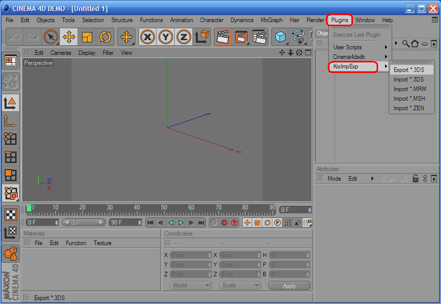

After installation the "KrxImpExp" plugins, go to the main menu and select menu "Plugins". Then click submenu "KrxImpExp" and select an operation (import or export) and a file format. 
Table of contents